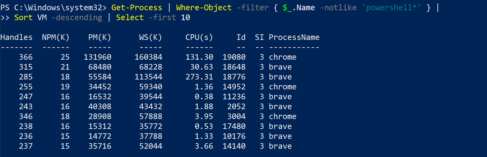

Qui vengono presentate alcune caratteristiche con degli esempi, iniziando dall'help.
Get-Command - Get-Help - Get-Member
Get-help con questo comando si ottengono i seguenti dati : NAME, SYNOPSIS, SYNTAX, DESCRIPTION, RELATED LINKS e REMARKS
Start-transcript - registra un log con i comandi inseriti in un file di testa
Get-command -noun service - elenco comandi con nome service
Get-service *win* - elenco servizi con nome inizia per win
Get-help get-service – online help online si apre finestra Help *eventlog*
Se cerco command – posso usare per abbreviare gcm
Come usare l’help da PS o online:
COME LEGGERE L'HELP
Il comando accetta 2 serie di parametri da usare in modo distinto :
- i parametri possono essere comuni o separati – nel caso dei parametri separati se si usa uno di questi poi si possono usare solo i parametri inseriti in quel tipo ad esempio se si inserisce il parametro -List poi non si possono inserire i parametri -LogName o -UserName presenti nella prima tipologia.
Parametri opzionali -- inseriti tra le parentesi quadre [ ]
Parametri obbligatori :
- Nell’esempio dell'immagine sopra esposto -LogName è obbligatorio perchè è il primo parametro mentre -InstanceId è facoltativo perchè è racchiuso tra le [] - La presenza delle [] indica che si tratta di un positional parameter e se si omette il nome del parametro il comando lo prende in base alla posizione. - Es. Get-eventlog system - system è un parametro cioè -LogName
- Es. Get-Eventlog -Logname system
- Si possono inserire insieme positional parameter e parameter con nome ma attenzione alla posizione.
- Es. Get-eventlog system -newest 20 ok
- Es. Get.EvenLog -newest 50 -LogName system ok perchè inserito il nome
FULL HELP - Help Get-EventLog -full
Per ogni parametro si ha una ulteriore descrizione :
- Logname è obbligatorio e alla posizione valore di default si accetta * come carattere jolly
- List è facoltativo e non lo si accetta come positional, non ha un valore di default e non accetta il caratteri jolly.
- Il tipo di parametro è indicato tra <….>
- String < string > o Int, Int32, or Int64 o DateTime
- string[] accetta parametri array, collection or lista di stringhe quindi anche 1 sola stringa
- nelle liste si può inserire uno,due,tre o "uno", "due" o "tre"
- parametri anche tramite risultato function es. -Name (Get-content parametri.txt) mettendo le parentesi si forza l’esecuzione della funzione ed il risultato viene inserito come parametro.
- ottenere un esempio dall'help Help Get-Eventlog -example
- richiamare l'help online Help Get-EventLog -online
COMMAND NAME
- Cmdlet – naming convection – function – workflow – command – application
- Inizia per Get Set New Pause o alias
get-alias si ottengono gli alias dei comandi
è possibile abbreviare le parole o usare il comando show-command get-EventLog
si aprirà una finestra dove inserire i parametri e dopo averli inseriti si può lanciare il commando o copiare il commando ed inserirlo nella shell.
PROVIDERS
è un adattatore che ci permette di vedere diverse risorse
Diverse capabilities :
- ShouldProcess—Means the provider supports the use of the -WhatIf and -Confirm parameters, enabling you to “test” certain actions before committing to them.
- Filter—Means the provider supports the -Filter parameter on the cmdlets that manipulate providers’ content.
- Credentials—Means the provider permits you to specify alternate credentials when connecting to data stores. There’s a -credential parameter for this.
- Transactions—Means the provider supports the use of transactions, which allows you to use the provider to make several changes, and then either roll back or commit those changes as a single unit.
Permette la view di diversi data storage non solo su Filesystem :
Per operare ci sono diversi comandi che si utilizzano su tutte le unità dei providers con il commando seguente vediamo un elenco dei comandi definiti per un item(può essere file, folders – qui non vengono nominati si usa solo item) Ad esempio i Registry sono visti come filesystem perchè PS lo considera come un data-storage però poi nei comandi ci sono delle peculiarità da prendere in considerazione.
- get-command -noun *item*
ITEM
- Verbs like Clear, Copy, Get, Move, New, Remove, Rename, and Set can all apply to items (like files and folders) as well as to item properties (such as the date the item was last written, or whether it’s read-only).
- The Item noun refers to individual objects, like files and folders.
- The ItemProperty noun refers to attributes of an item, such as read-only, creation time, length, and so on.
- The ChildItem noun refers to the items (like files and subfolders) contained within an item
Operiamo ora su FileSystem :
- PS permette di usare i comandi sia dos che unix -- vedere Get-alias
- Set-Location -Path C:\.....\....
Per usare altro data storage - ad esempio HKEY_CURRENT_USER:

Altri providers possono essere – IIS e Sql Server
PIPELINE
Ps permette tramite la pipeline di coniugare diversi comandi sulla stessa riga di commando.
Vediamo il commando per esportare in csv o xml la lista dei processi :
Export files :
Con out-file possiamo usare diversi parametri
CHIEDERE CONFERMA O SIMULAZIONE COMANDI
Ora vediamo come è possibile operare sui processi/servizi
Get-Process -name winword | Stop-Process o Start-Process [ -confirm ]
L’opzione -whatif ci dice cosa esegue il commando :
Per richiamare il contenuto del file :
OGGETTI
Ps è orientato agli oggetti per cui vengono presentati oggetti con metodi, propietà e function.
Es. Vediamo alcuni member dei processi filtrati con Name che iniziano per s
Da notare il memberType e diversi tipi di property.
SORT -Get-Process | Sort-Object -property VM - Get-Process | Sort VM,ID -desc
SELECT PROPERTY - Get-Process | Select-Object -property Name,ID,VM,PM | Out-File test2.txt
Get-Process | Select -First 10
Mettere prima il select e poi il sort altrimenti si ha un risultato diverso.
Get-Process | Select Name,ID,VM | Sort VM -descending | gm
PASSAGGIO PARAMETRI TRAMITE LA PIPELINE -- da qui | a qui
Primo metodo :
- pipeline input ByValue
- es. Get-process xxxxxx | stop-process - stop-process attende il nome di un processo per cui il commando get-process deve aver come output un nome di un processo e per aver questo xxxxxx deve essere un filtro del commando get-process
Mentre nell’help del comando stop-process troviamo :
L'output del get-process è un oggetto del tipo process e il commando stop-process accetta in input un oggetto di tipo process e nella pipeline accetta valore ByValue. Se non c’è corrispondenza prova con l’altro metodo byPropertyName
Parametri da file :
-Get-Service -computerName (Get-Content names.txt)
FILTER
Parameter : -filter
Comparazione :
-eq—Equality, as in 5 -eq 5 (which is True) or "hello" -eq "help" (which is False)
-ne—Not equal to, as in 10 -ne 5 (which is True) or "help" -ne "help" (which is False, because they’re, in fact, equal, and we were testing to see if they were unequal)
-ge and -le—Greater than or equal to, and less than or equal to, as in 10 -ge 5 (True) or Get-Date -le '2012-12-02' (which will depend on when you run this, and shows how dates can be compared)
-gt and -lt—Greater than and less than, as in 10 -lt 10 (False) or 100 -gt 10 (True)
Per string :
-ceq, -cne, -cgt, -clt, -cge, -cle
$True e $False, -and e -or, -not , -like *s*
The reverse is -notlike, and both are caseinsensitive; use -clike and -cnotlike for case-sensitive comparisons.
-match makes a comparison between a string of text and a regular expression pattern. -notmatch is its logical opposite, and as you might expect, -cmatch and -cnotmatch provide case-sensitive versions. Regular expressions are beyond the scope of what we’ll cover in this book.
Get-Service | Where-Object -filter { $_.Status -eq 'Running' }

$_ placeholder
JOB
- Get-job -- lista job in esecuzione
- Multitasking - task scheduler
VARIABILI
altri

Variabile all’interno di una stringa :
TIPI DI VARIABILI
[int]—Integer numbers
[single] and [double]—Single-precision and double-precision floating numbers (numbers with a decimal portion)
[string]—A string of characters
[char]—Exactly one character (as in, [char]$c = 'X'
[xml]—An XML document; whatever string you assign to this will be parsed to make sure it contains valid XML markup (for example, [xml]$doc = Get-Content MyXML.xml)
[adsi]—An Active Directory Service Interfaces (ADSI) query; the shell will execute the query and place the resulting object or objects into the variable (such as [adsi]$user = "WinNT:\\MYDOMAIN\Administrator,user")
[char]$char = "A" [string]$var = "abc"
Comandi per operare con variabili :
New-Variable
Set-Variable
Remove-Variable
Get-Variable
Clear-Variable
INPUT – OUTPUT
$var = read-host Iinserisci un nome"
Output : write-host o write-output
SCRIPTING
Default value per parametri : assegno localhost come default
param ( $computername = 'localhost' )
<# Commenti
.SINOPSIS
.PARAMETER computername ……..
.DESCRIPTION ..
#>
PIPELINE
negli script tutti i comandi nella stessa pipeline
Get-service
Get-process
Nella stessa pipeline mentre nella shell ogni commando opera in una sua pipeline questo porta a risultati diversi.
SCOPE - global scope -- script scope ( all’interno di questa ci sono function scope )
[CmdletBinding()] deve essere primo commando nello script
Per rendere obbligatorio il parametro :
[CmdletBinding()]
param (
[Parameter(Mandatory=$True)]
[string]$computername, la , indica che I parametri devono essere divisi da una virgola es- ./myScript param1, param2
[int]$numeroDrive = 2 )
Operators: -as, -is, -replace, -join, -split, -in, -contains
Per gestire errori :
{
try
{ }
catch
{ }
}
ARRAY
Definizione :
Access element – modify element – add element
Array sort

Find element
MultiDimensional array -- 1 x 3
Array List – definizione ed operazioni
DICTIONARY
Non si può inserire una key già esistente. Si riceve un errore.
Ricordiamoci sempre il get-member per vedere i metodi e le proprietà :
Get-alias
Get-process
Get-process -name Microsoft
get-process -name brave | get-member
get-process -name brave | get-member
PS C:\> $a = get-process -name brave
PS C:\> $a
$+ nome è una varibile
PS C:\> $b =get-process -name brave
PS C:\> $b.Id -- view property solo una alla volta
$b.kill() -- chiude processo
Get-history
Get-psdrive -- dati disco locale
Alias -- Get-alias -- ? = where-object
$_ è current object in pipeline
COMANDI CON DECORATORI
get-psdrive | ? { $_.free -gt 10} | select-object Root - dischi con free space > 10 get-psdrive | ? { $_.free -gt 10} | foreach-object free - spazio libero dove > 10000
et-psdrive | ? { $_.free -gt 10} | foreach-object { write-host "Spazio Libero " $_.root 'is' $_.free -ForegroundColor blue}
Free space for C:\ is ……
Free space for D:\ is ……
get-psdrive | ? { $_.free -gt 10} | foreach-object { write-host "Free space for" $_.root 'is' ($_.free /1024) -ForegroundColor red}
Free space for C:\ is .....
Free space for D:\ is ......
"{0:N2}" -f 100
100.00
"{0:c2}" -f 100
£100.00
"{0:p2}" -f 100
10,000.00%
get-psdrive | ? { $_.free -gt 10} | foreach-object { write-host "Free space for" $_.root 'is' ("{0:N3}" -f ($_.free /1024)) -ForegroundColor red}
Free space for C:\ is .....
Free space for D:\ is .....
CICLO
get-psdrive | ? { $_.free -gt 10} | foreach-object { $c = 0; write-host "primo giro" } {$c = $c + 1 ;write-host "giro dopo" $c } {write-host " fine " $c }
primo giro
giro dopo 1
giro dopo 2
fine 2
foreach-object se in console cli
foreach in script
2 metodi diversi stesso risultato :
- $Service = 'w32time'; Get-Service -Name $Service
- Get-Service | Where-Object Name -eq w32time
Creare una nuova directory. Si può comunque usare il vecchio Mkdir.
get-volume
new-item -Itemtype Directory "Log"
ITERATORI
CICLO FOR
for ($i = 1; $i -lt 5; $i++) {Write-Output "Sleeping for $i seconds"
Start-Sleep -Seconds $i
}
DO e DO … WHILE
$number = Get-Random -Minimum 1 -Maximum 10do {
$guess = Read-Host -Prompt "What's your guess?"
if ($guess -lt $number) {
Write-Output 'Too low!'
} elseif ($guess -gt $number) {
Write-Output 'Too high!'
}
}
while ($guess -ne $number)
WHILE
while ($i -lt 5) {
$i += 1
if ($i -eq 3) {
continue
}
Write-Output $i
}
Break, Continue, and Return
COPY
PS C:\Users\mecba\onedrive\desktop\ps1> copy-item *.xlsx C:\Users\mecba\onedrive\desktop\ps2 -recurse-recurse per copiare tutti file presenti –
-force
Copy con rename file
copy-item *.xlsx C:\Users\mecba\onedrive\desktop\ps2\nuovo.xlsx -recurse
MOVE
Move-item se file già presente -force DELETE
PS C:\Users\mecba\onedrive\desktop\ps2> remove-item *.xlsx -whatifWhat if: Performing the operation "Remove File" on target "C:\Users\mecba\onedrive\desktop\ps2\nuovo.xlsx".
What if: Performing the operation "Remove File" on target "C:\Users\mecba\onedrive\desktop\ps2\Power_BI_DIRTYDATA.xlsx".
Get-location es. $loc = get-location
Set-location es. $loc = set-location -Path c:\users\mecba\onedrive\desktop\ps1 -passthru
Push-location
RENAME
Get-ChildItem *.log | Rename-Item -NewName { $_.Name -replace '.log','.txt' } Creare funzioni personali in file funzioni.psm1
- Mentre script nome_file.ps1

get-help *pin*
PS C:\Users\mecba\onedrive\desktop> $env:PSModulePath -split ";"
C:\Users\mecba\OneDrive\Documents\WindowsPowerShell\Modules creo directory
C:\Program Files\WindowsPowerShell\Modules
C:\Windows\system32\WindowsPowerShell\v1.0\Modules
import-module pingo -force -verbose --- per sicurezza bloccato import ed executing
- Se si inseriscono muduli nel percorso sopra li trova in automatico senza inserire il path
Esempio
FILE .psm1
function p {
param($computername)
return (test-connection $computername -count 3 -quit)
}
File PS1
Import-Module -Name C:\Users\mecba\OneDrive\Desktop\myFunc.psm1 -Verbose
write-host "Hello my Friend"
$input = Read-Host "Inserisci indirizzo da pingare"
$ping = p $input
write-host “risultato – l’indirizzo risponde …. “ $ping
sleep 10
lista directory into file e visione :
get-childitem > dir.txt
get-content dir.txt
get-childitem | out-file ./directory.txt
get-help get-service -showwindow
get-service bits o get-service b* o gsv b*
$error = Get-ChildItem -Path C:\Test\*.txt
If $err != "" -- manda mail
Get-service -name bits | stop-service
Get-service -name bits | start-service
Notepad
Calc
Get-process | Export-clixml -Path c:\process.xml export in xml
Get-service | out-file -Filepath c:\service.txt
Get-service | convertTo-csv
Get-service | convertTo-html Out-File c:\serv.html
Get-content c:\service.txt
Compare-object
OBJECT
Get-service | select -Property
SELECT METHOD
Get-childitem | select -property name, length | sort -property length - visualizza solo name e length
- Get-history
Uso alias
Get-service | where { $_.status -eq "running" -and $_.name -like "b*"}
poWershell remoting
.\nomeScript
SCRIPT CREARE FILE CSV
$outfile = "C:\Outfile.csv"
$csv = {} | Select "Id","City", "State" | Export-Csv $outfile
$csvfile.Id = "10001"
$csvfile.City = "London"
$csvfile.State = "U.K."
$csvfile | Export-CSV $outfile
$csvfile.Id = "10002"
$csvfile.City = "Rome"
$csvfile.State = "Italy"
$csvfile | Export-CSV $outfile -Append
CONCATENARE DIVERSI FILE CSV SIMILI IN UN NUOVO FILE CSV
get-childItem -filter "*.csv" | Select-Object -ExpandProperty Name | import-csv | out-file nuovofile.csv
import-csv nuovofile.csv | out-Host
CONCATENARE DIVERSI FILE CSV SIMILI IN UN NUOVO FILE HTML
get-childItem -filter "*.csv" | Select-Object -ExpandProperty Name | import-csv | ConvertTo-Html | out-file nuovofile.html
READ FILES AND RENAME FILES
ROBOCOPY
Robocopy source destination /L non copia nulla ma fa lista file con dimensione
Robocopy source dest - copia tutto
Robocopy source dest *.doc - copi tutti file .doc
SCRIPT
Es. Lista con numero files into zip archive
$ZipRoot = 'C:\users\mecba\onedrive\desktop\pec'
$tipofile = '.csv'
$Count = 0
$riga = ''
$spazio = ' '
$ZipFiles = Get-ChildItem -Path $ZipRoot -Recurse -Filter '*.zip'
#Write-Host "zipfile ", $ZipFiles[0]
$Shell = New-Object -ComObject Shell.Application
#Write-Host "zip ", $ZipFiles[0].FullName
$Results = foreach( $ZipFile in $ZipFiles ){
$Count += $Shell.NameSpace($ZipFile.FullName).Items() |
Where-Object { $_.Name -match $tipofile } |
Measure-Object |
Select-Object -ExpandProperty Count
Write-Host "Archive ", $ZipFile ," Count= ", $Count
$riga = [System.String]::Concat($ZipFile , $spazio,$Count) | out-file -append 'lista files.txt'
$Count = 0
}
write-Host 'Fine '
COMPUTER INFORMATION
Get-counter - help --
get-wmiobject -list *
get-cimclass -className *memory*
get-NetIPAddress
get-NetIPConfiguration
gsm get-dns*
get-DnsClient
get-dnsclientserverAddress
Commando per vedere eventi di Sistema in questo caso 1074 – riavvio Sistema –
Get-EventLog -log system -newest 1000 | ? { $_.eventid -eq '1074' } | format-table machinename, username, timegenerated -autosize
get-computerInfo *memory*